Chapter - 8 Advanced Statistical Methods
Class given by: Michael Greenacre
library(lavaan)
library(formattable)
library(kableExtra)
library(knitr)8.1 Clustering
Clustering has the aim to classify similar objects (cases, people, companies, products, texts, advertising campaigns…) into groups so that within each group the objects are relatively similar, while the groups are different between one another.
This is also called segmentation or partitioning.
The basic concept in clustering, as well as in most areas of statistics where there are many variables being measured simultaneously on the objects, is that of distance. If we can define a distance between objects then we can devise algorithms to put those “close” to one another in the same group, and those “far” from one another in different groups. The same underlying concept is used in several methods of big data analysis, for example, finding people in a large database that are “close” to you as a client in terms of your purchasing choices.
Three types of hierarchical clustering:
Complete linkage: maximum method: take the maximum level of the two options
Average linkage: average method
Ward linkage
Significance clustering. Visualized by a dendogram.
8.1.1 Hierachical clustering
| Argentina | Brazil | Canada | China | Germany | Spain | Italy | Netherlands | Poland | Turkey | USA | |
|---|---|---|---|---|---|---|---|---|---|---|---|
| Argentina | 0 | 2 | 7 | 6 | 8 | 4 | 6 | 7 | 8 | 4 | 6 |
| Brazil | 2 | 0 | 6 | 6 | 7 | 4 | 5 | 7 | 8 | 4 | 6 |
| Canada | 7 | 6 | 0 | 5 | 3 | 4 | 4 | 2 | 4 | 5 | 2 |
| China | 6 | 6 | 5 | 0 | 7 | 7 | 7 | 6 | 6 | 7 | 5 |
| Germany | 8 | 7 | 3 | 7 | 0 | 3 | 3 | 1 | 2 | 5 | 4 |
| Spain | 4 | 4 | 4 | 7 | 3 | 0 | 1 | 3 | 4 | 3 | 5 |
| Italy | 6 | 5 | 4 | 7 | 3 | 1 | 0 | 3 | 4 | 3 | 5 |
| Netherlands | 7 | 7 | 2 | 6 | 1 | 3 | 3 | 0 | 3 | 5 | 4 |
| Poland | 8 | 8 | 4 | 6 | 2 | 4 | 4 | 3 | 0 | 5 | 4 |
| Turkey | 4 | 4 | 5 | 7 | 5 | 3 | 3 | 5 | 5 | 0 | 6 |
| USA | 6 | 6 | 2 | 5 | 4 | 5 | 5 | 4 | 4 | 6 | 0 |
8.1.1.1 Complete Linkage
DK.clust <- hclust(as.dist(table))
plot(DK.clust) +
abline(h = 6, col="red") 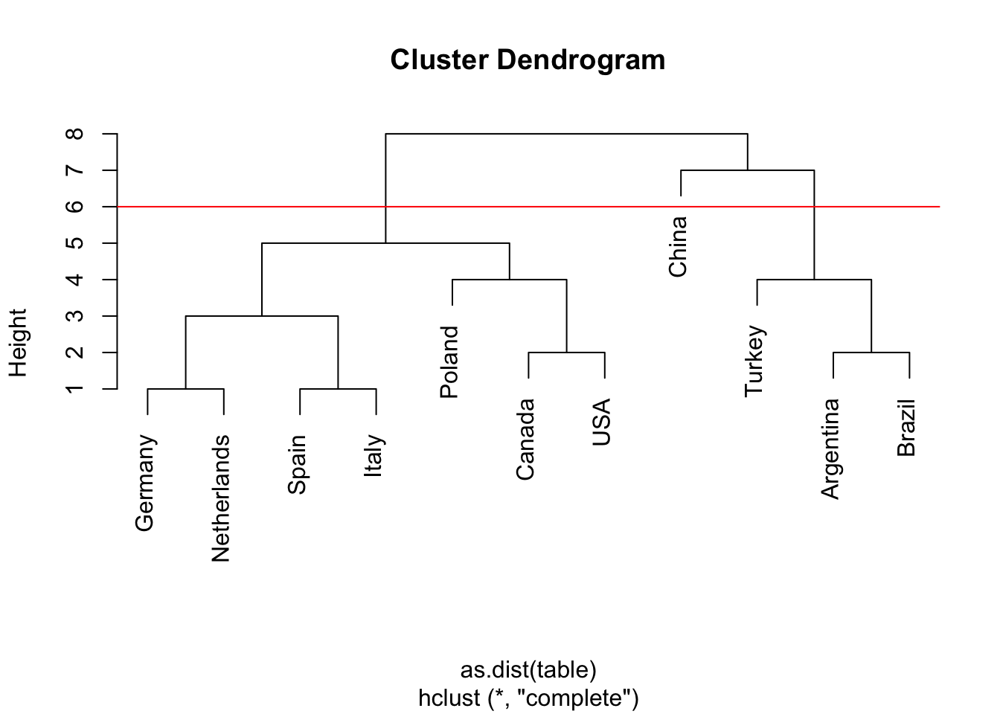
integer(0)8.1.1.2 Average linkage
plot(hclust(as.dist(table), method="average"), main="Average linkage") +
abline(h = 5, col="red") 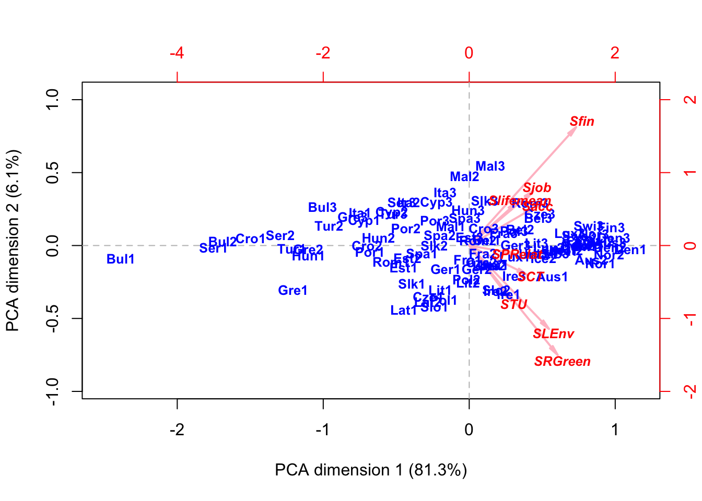
integer(0)Significance clustering
Total sum of squares (total variance):
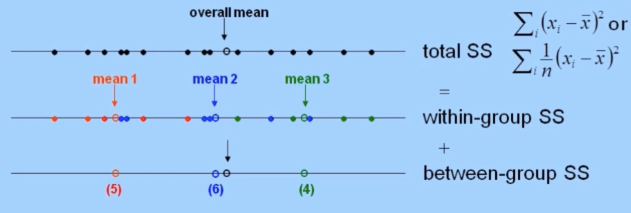
Each subset has a different mean. We calculate the within-group SS.
ANOVA: We look at the distance between groups and compare it with the total sum of square. Then we check if this is significant or if it is random.
8.1.1.3 Ward linkage
Ward clustering: related to variance criteria & ANOVA. Of particular interest for all Euclidean and weighted Euclidean distance functions. It decomposed the total variance of the points in space into parts: “Within-clusters” and “between-clusters.”
The idea can be illustrated by analysis-of-variance (ANOVA) for one variable (SS= sum[or average] of squared deviations from the mean), when observations are grouped.
plot(hclust(as.dist(table), method="ward.D2"), main="Ward linkage",
xlab="Countries", hang=-1) +
abline(h = 8, col="red") 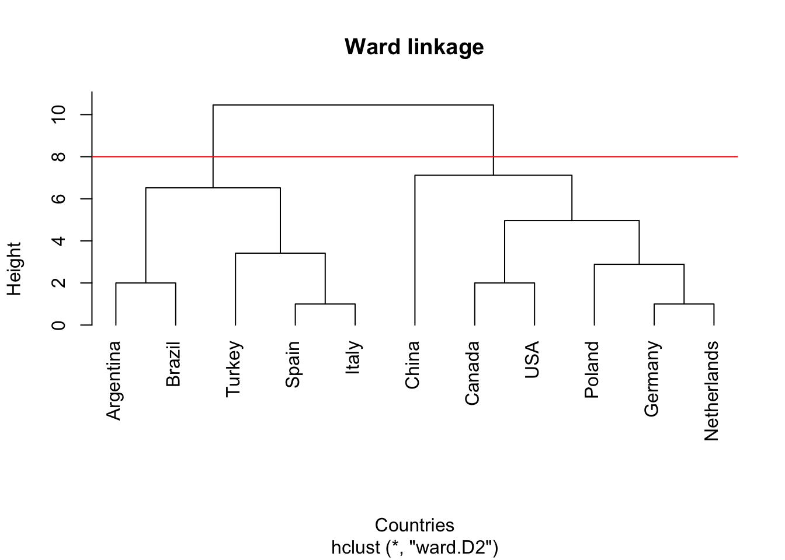
integer(0)Ward clustering:
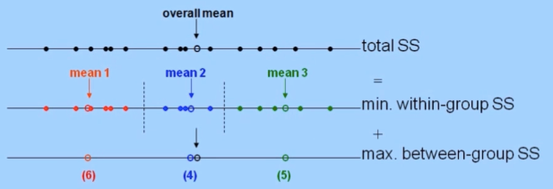
Ward clustering in multivariate space:
For any set of n points in (weighted) Euclidean space:
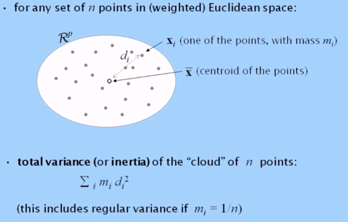
Centroid = overall mean
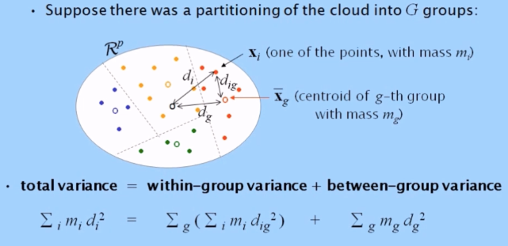
For successful clustering, we want the between-group variance to be as high as possible, which is equivalent to the within-group variance being as low as possible. This is what the hierarchical form of ward clustering does at each merging step of the dendogram.
8.1.2 Non-Hierachical clustering
K-means: K = the number of groups.
To achieve a simple partitioning of a data set (usually very large) into pre-chosen number of homogeneous groups. Suppose G groups and select 3 points as seeds: the initial point (team leader). Seeds can be chosen at random or by intelligent selection.
Next these new groups will calculate its mean. The centroids are now the seeds of the next step. The groups are recalculated and a new centroid is found. This continues until there is no further improvement to make, this is the solution.
In these steps, the between-group variance becomes large and the within-group variance decreases.
Because the seed is randomly chosen, you should repeat it multiple times to have different starts, and therefore solutions and get the optimal result.
You can choose to use the Euclidean distance or the Manhattan distance. Because of the bigger differences in the variables with wide ranges compared to those with narrower ranges, one way to get rid of this effect is to simply divide each variable by its maximum value. Now, there is a range between 0-1. This is classed range-standardized data.
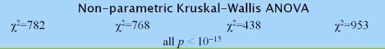
8.2 Multi-Dimensional Scaling
Scaling
Factorial methods
Principal components analysis (PCA)
Correspondence analysis (CA)
Multidimensional scaling (MDS)
Metric MDS
Non-metric MDS
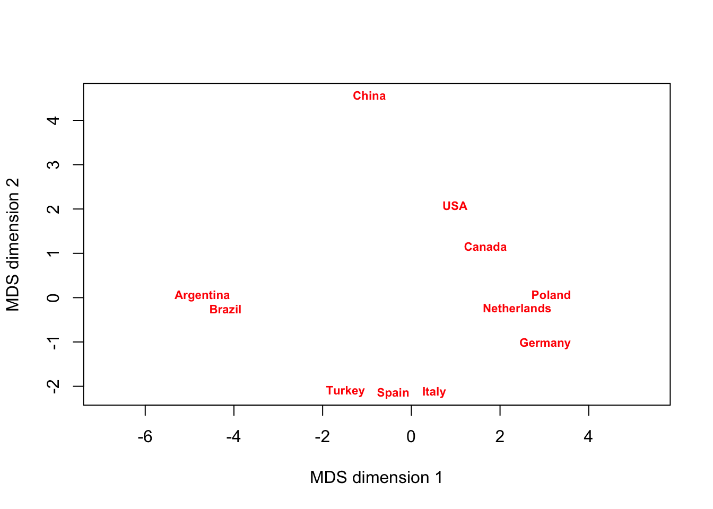
[1] 0.7181458 0.7909089[1] 0.091999458.3 Principal component analysis
satis <- read.csv("www/satisfaction.csv", header = TRUE, sep = ",", dec =
".")
attach(satis)
data <- satis[,c(4:12)]
row.names(data) <- satis[,2]DK.diss <- dist(data)
DK.data <- cmdscale(DK.diss, eig=TRUE)8.3.1 Biplots
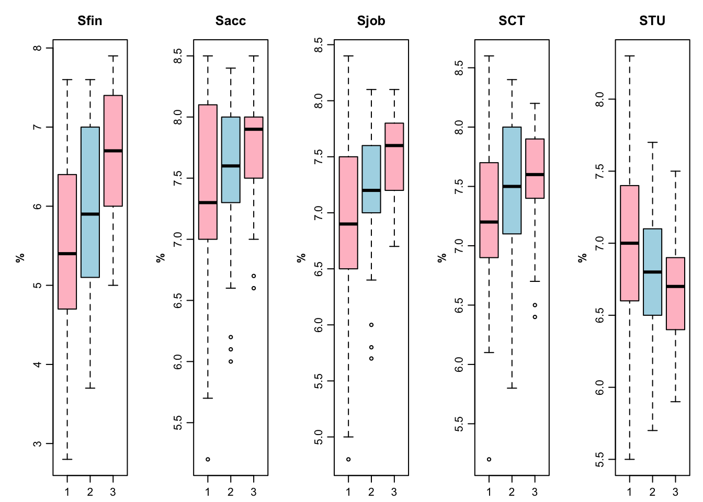
DK.PCA <- PCA(as.matrix(data), weight=FALSE)
PLOT.PCA(DK.PCA, map="asymmetric", rescale=0.5, axes.inv=c(-1,1), dim=c(2,3))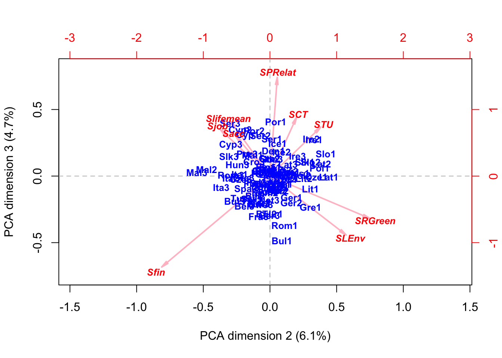
8.4 Correspondence analysis
Within correspondence analysis (CA) we do not analyze absolute values but relative values (profiles) that are visualized. This means relative to the row sums and column sums. Row & column profiles are weighted by marginal values (masses).
A equivalent way of think about CA is in two ways:
- Finding the optimal scale for response categories that discriminates between explanatory variables. We are interested in the relationship between these two sets.
Response variable = f.e. attitudes
Explanatory variable = f.e. demographics
Optimal scale values: standard column coordinates standard column coordinates on first CA axis.
Group mean scores for optimal scale values: first optimal scale values: first principal row coordinates
We want to maximize the between-group variance. Therefore, we introduce the identification conditions of individual scores on the response variable. An example is to adopt a mean 0 and variance 1. Where are variables are standardized to -1 between +1.
- Alternatively, finding optimal scales for the two (or more) variables that maximize their correlation. We are interested in their inter-relationship within a single set of variables
Optimal scale values: standard row and columns coordinates of the respective questions on first CA axis.
Squared correlation is equal to the first principal inertia (eigenvalue). Higher correlation achieved by opposing those with strong opinions against those with moderate ones.
Creating cross-tabulation in r:
my_table(head(age.V18.US))| SA | A | NN | D | SD | |
|---|---|---|---|---|---|
| 15-24 | 20 | 59 | 15 | 24 | 7 |
| 25-34 | 31 | 84 | 19 | 88 | 18 |
| 35-44 | 29 | 104 | 22 | 71 | 16 |
| 45-54 | 13 | 91 | 20 | 70 | 25 |
| 55-64 | 16 | 75 | 23 | 66 | 17 |
| 65-74 | 4 | 54 | 10 | 56 | 16 |
8.4.0.1 Concatenating tables
The approach of stacking or concatenating tables, interactively codes categories. For example:
Variables gender and country become:
Canada 1
Canada 2, etc.
Where 1 represents male and 2 represents female. Such as below:
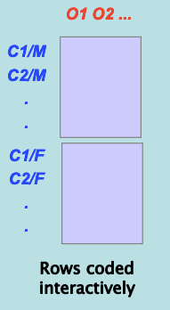
However, if there are many different explanatory categories, this could result in a extremely large data set. It is also possible to stack the results for each response variable by explanatory variable although that does not provide a interaction.
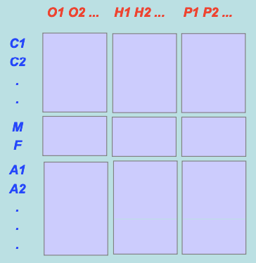
Concatenating tables in r:
8.4.0.2 Plot
The red points are the vertices of a simplex in the full space in which these row profiles lie.
my.ca <- ca(age.V18.US)
plot(my.ca, main="One parent can bring up a child as well as two parents together", mass=c(TRUE,TRUE))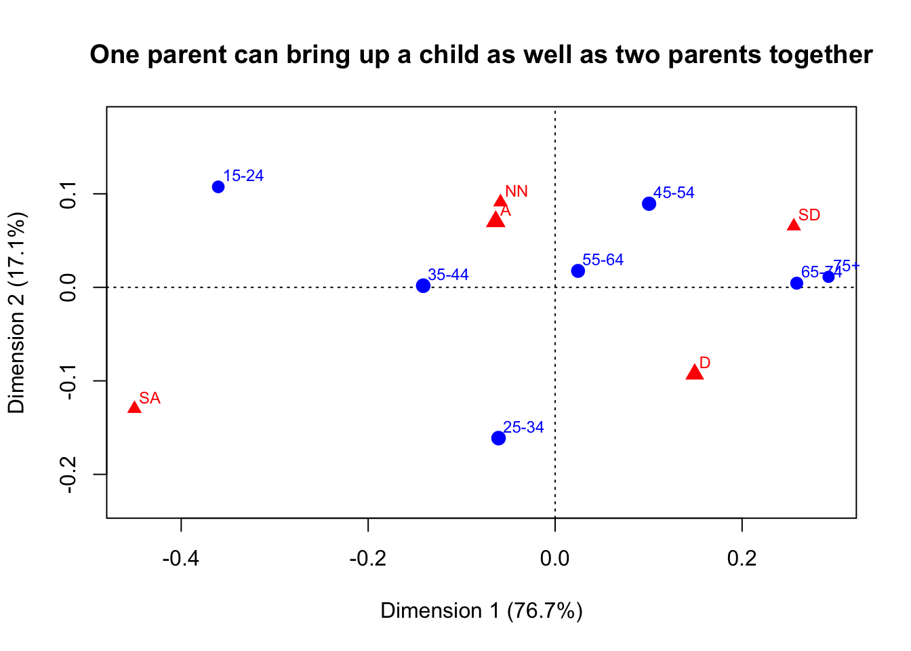
The inertia measures the amount of variance in the table or how much association between the columns and the rows variables.’
Inertia = \(x^2/n=0\)
Correlation between the row and columns = \(\sqrt\lambda_1\)
Contingency coefficient =
\(C_{max} = \sqrt{\frac{\sigma^2}{1+\sigma^2}}\)
After standardizing (normalizing) where \(C* = C/C_{max}\) which lies
between 0-1 = \(C_{max} = \sqrt{\frac{K}{1+K}}\)
Blaikie proposed:
| 0.00 | None |
| 0.01-0.09 | Negligible |
| 0.10-0.29 | Weak |
| 0.30-0.59 | Moderate |
| 0.60-0.74 | Strong |
| 0.75-0.99 | Very Strong |
| 1.00 | Perfect |
summary(my.ca)
Principal inertias (eigenvalues):
dim value % cum% scree plot
1 0.033590 76.7 76.7 *******************
2 0.007499 17.1 93.8 ****
3 0.002111 4.8 98.7 *
4 0.000589 1.3 100.0
-------- -----
Total: 0.043789 100.0
Rows:
name mass qlt inr k=1 cor ctr k=2 cor ctr
1 | 1524 | 99 996 320 | -360 914 381 | 107 81 152 |
2 | 2534 | 189 990 129 | -61 122 21 | -161 868 656 |
3 | 3544 | 191 922 94 | -141 922 113 | 2 0 0 |
4 | 4554 | 173 920 78 | 100 513 52 | 89 407 184 |
5 | 5564 | 155 128 25 | 25 85 3 | 18 43 6 |
6 | 6574 | 110 931 181 | 258 931 220 | 4 0 0 |
7 | 75 | 83 936 173 | 292 934 211 | 11 1 1 |
Columns:
name mass qlt inr k=1 cor ctr k=2 cor ctr
1 | SA | 91 995 460 | -450 919 551 | -130 76 205 |
2 | A | 396 868 94 | -64 389 48 | 70 479 262 |
3 | NN | 95 408 62 | -58 119 10 | 91 289 105 |
4 | D | 329 996 233 | 149 719 218 | -93 277 377 |
5 | SD | 89 938 151 | 255 880 173 | 65 58 51 |8.4.1 Multiple Correspondence Analysis
Rather than look at the relationships between the demographics and the questions, we now look at the relationships within the questions. This is also reminiscent of factor analysis. Also we look at individual-level data, although we will soon see that this has something to do with the Burt matrix as well.
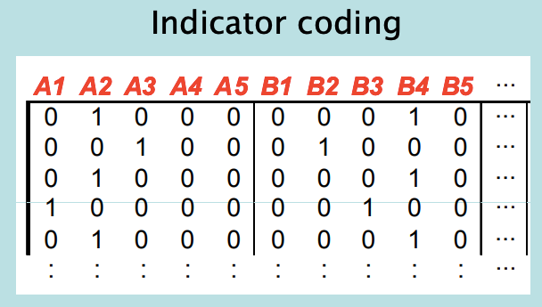
The total inertia of an indicator matrix is \(Z = (J-Q)/Q\). Where the categories are the J and the Q are the variables.
The standard coordinates of the categories are identical
The principal inertias of the Burt analysis are the squares of those of the indicator matrix: thus the percentages in Burt analysis are higher!
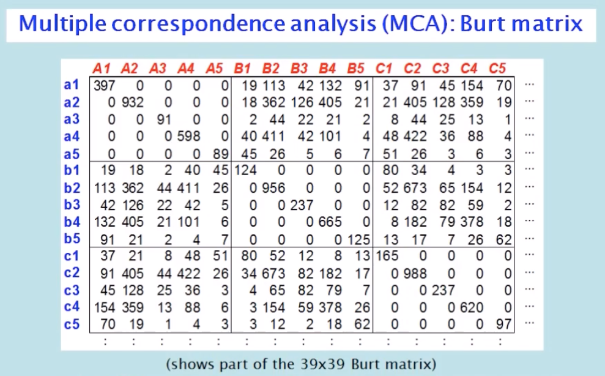
First principle: the inertia of a Burt matrix should ignore the sub matrices down the diagonal.
Second principle: the “explained inertias” should be explaining the off-diagonal matrices (=adjusted inertia). The adjusted singular values (square roots of the adjusted inertias) are (where adjusted inertias) are (where’ s are the inertias of the Burt matrix)
8.4.1.1 Subset analysis CA
CA is subcompositionally incoherent because if we extract a subsection of the CA then the profiles will be relative frequencies, relative to the total.
8.5 Multiple linear regression & classification trees
Assumptions:
The conditional distribution is normal
X,Y is a straight line
The variance is the same. Homoscedastic
However, in reality this is not always true.
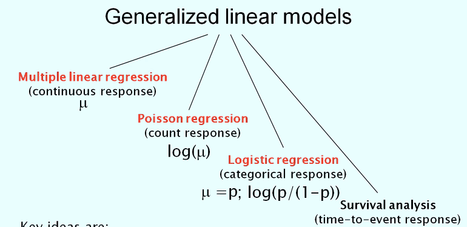
The transformation fo the mean is called the link function. The conditional distribution it is appropriate to the type of response variable.
8.5.0.1 Regression tree
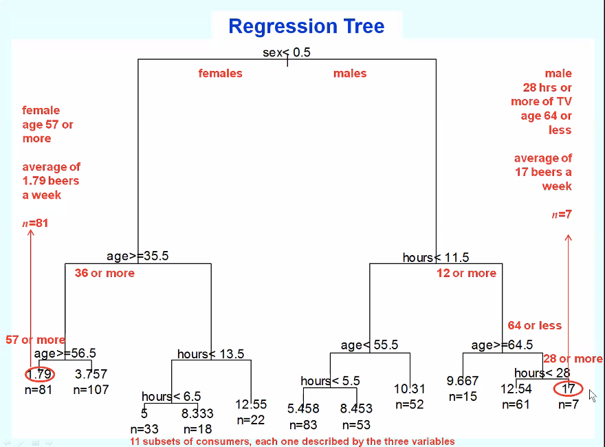